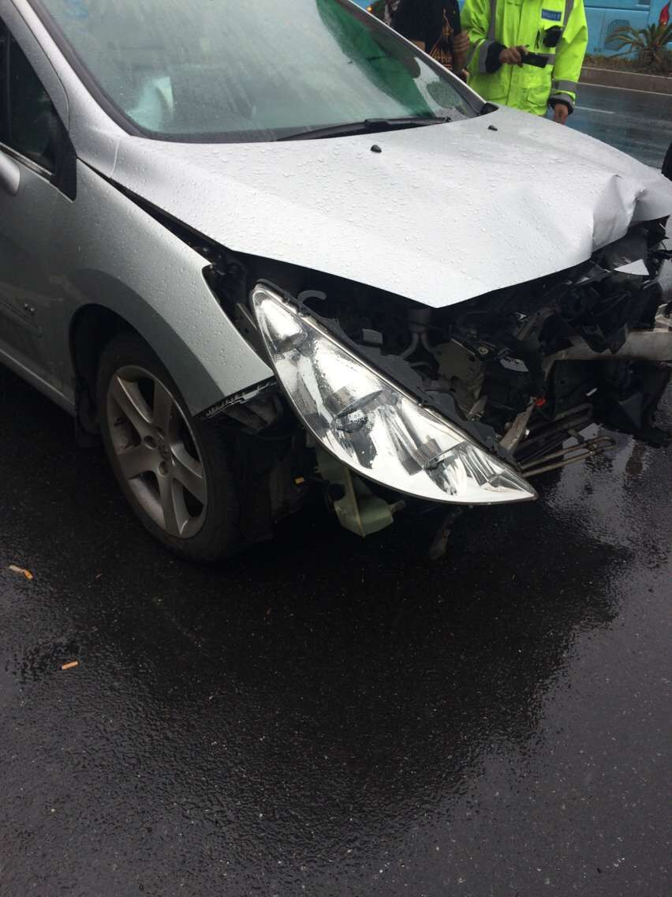

以前，我从不会相信自己会经历车祸这样子的事情。即使每次在高速路上想想自己发生车祸的事儿，也都当成儿戏，从来都不会觉得成真
这次来学校的路上我也有想这个车祸，但当时觉得怎么可能，不会吧...就如同平常一样，车子眼看就要与前面一辆撞到了，以前我会叫一声，然后我爸就会说，不会撞到的放心好了，这次就真真实实的撞到了。我听见砰的一声，我整个人就从后面的位置掉进脚放的那一条缝隙中，然后又是砰的一声，后来我才知道那是后面那一辆车撞了上来。随后就弥漫着烟雾了。我听到了外面的人叫我们快点下去，因为怕爆炸什么的，我就立马打开车门发现原来后面还有一辆车子。
一共差不多4,5辆车子追尾，今天下雨，高速上能见度低，真不知道第一辆车子为什么要停下来，也幸亏人都没有受伤，交通事故还是挺可怕的。
今年貌似运气特别背，先是晕倒，耳朵后面被缝针，现在有事闹着一出，哎也幸亏没什么事。所以生命很脆弱，大家都要安全的过活，开心的过活哈
